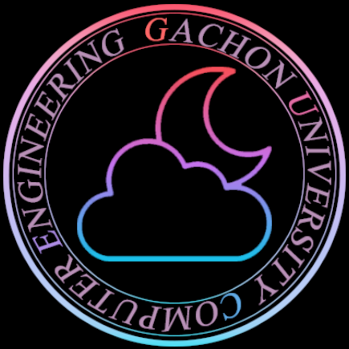

<!DOCTYPE html>
<html>
<center>
<head>
<meta charset="utf-8">
<title>산공을 위한 복수전공</title>
<link href="mystyle.css" type="text/css" rel="stylesheet">
<style>
a:visited {color:#f5f5dc; text-decoration:none;}
a:link {color:#f5f5dc; text-decoration:none;}
</style>
</head>
<body>
<div >

</div>
<ul id="menu">
 <a href="home.html" target= "_self"><li>● HOME</li></a>
<a href="산업공학.html" target= "_self"><li>● 산업경영공학과</li></a>
  <a href="컴공.html" target= "_self"><li>● 컴퓨터공학과</li></a>
  <a href="software.html" target= "_self"><li>● 소프트웨어학과</li></a>
  <a href="전자공학.html" target= "_self"><li>● 전자공학과</li></a>
  <a href="금융수학.html" target= "_self"><li>● 금융수학과</li></a>
  <a href="mypage.html" target= "_self"><li>● 마이페이지</li></a>
</ul>
<div id="content">
<h1> 컴퓨터공학과 </h1>
<div>
<ul id="menu1">
  <a href="컴공_교과과정.html" target= "_self"><li>● 교과과정</li></a>
  <a href="http://gachon.ac.kr/major/professor.jsp?h3=it&h4=02" target= "_self"><li>● 교수진 소개</li></a>
  <a href="컴공.html" target= "_self"><li>● 진로</li>
</div>
<a href="http://gachon.ac.kr/major/it/02/index.jsp" target="_blank"></a>
<span>
졸업 후 진로<br>
Enterprise Software 심화 과정: IT 전문 기업, 정부 기관, 금융기관, 의료기관, 컨설팅회사, 대학, 연구소, 벤처 창업 <br>
Smart Computing 심화 과정: 모바일 전문 기업, 웹호스팅 전문 기업, 정부 기관, 금융기관, 의료기관, 대학, 연구소, 벤처 창업 등<br>
Media 심화 과정: 게임개발 업체, 광고 회사, 영화사, 정부 기관, 금융기관, 의료기관, 대학, 연구소, 벤처 창업 등  

</span>
</div>
<div class="clear"></div>
<div class="copyright">
 Copyright  &copy;유성완 원현아 이기언 우하진 . All rights reserved.
</div>
</body>
</html>
